FAMILY JOURNAL / DAY 01
回到雙龍，和家人聚一聚
這趟原本是安排帶家人去九族玩，後來媽媽知道雙龍也有我們的家人，才有了第一天的相聚。一路找到馬遠，再找到雙龍，這次終於能和家人坐在一起，聽長輩講媽媽家族以前的事。對我來說，這一天真的很重要。
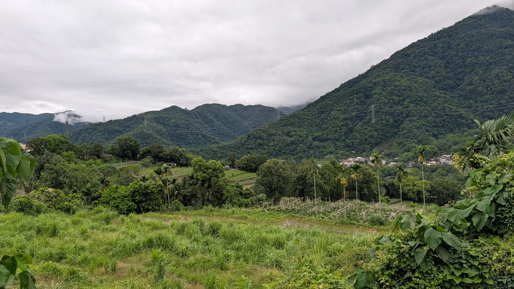
01 / 為什麼來雙龍
怎麼會安排來雙龍呢？
這次家族旅行，原本是打算去九族的。因為九族有原住民日免門票的活動，就想帶著家人一起去玩 XD。
後來媽媽知道，在南投的雙龍部落也有我們的家人。既然這次都要去南投了，雙龍也在九族附近，就把和家人見面的行程一起安排進來。
我媽媽是布農族，嘎爾姆旦家族。據家人說，雙龍是嘎爾姆旦家族最早的聚落點。我外公的爸媽，就是從這裡走到花蓮崙山的。
不過，我們也是這幾年才慢慢找到彼此。雙龍的家人一直都有和花蓮馬遠的家人聯繫，媽媽和舅舅們則是最近幾年才找到馬遠的家人，再從他們那裡知道，原來雙龍也有家人。
馬遠還有一位近百歲的長輩，這段家族的故事，就是從那位長輩那裡開始知道的。原本安排的一趟旅行，後來多了這個機會，能帶著家人一起回到媽媽家族最早的部落。這也是為什麼第一天對我這麼重要。

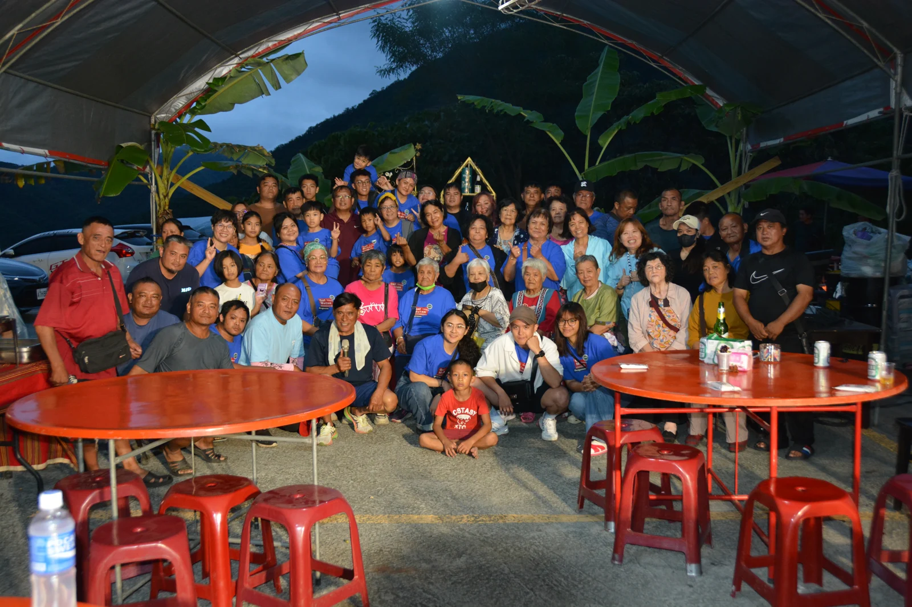
02 / 一起出發
帶著一大群家人，一起出發 XD
這次出門，有長輩，也有小朋友，一大群人一起坐遊覽車往南投去。旁邊都是家人，跟自己一個人出去玩的感覺真的差很多 XD。
中途停下來休息，大家就聚在陽傘下面坐著。身上好多件一樣的藍色衣服，一群人站在一起，很好認 XDDD。休息一下，再一起回到車上，繼續往雙龍去。
這趟是我幫忙籌劃的。從安排到真的出發，看著大家都在車上，就覺得很開心。九族明天再去，今天要先去和雙龍的家人見面。


03 / 到雙龍了
到了，這裡就是雙龍
到了雙龍，下午先在附近走走。旁邊都是山，山上還有雲。想到媽媽的家族最早就在這裡，走在路上也會忍不住多看看周圍。
以前說到家裡，想到的是花蓮崙山。現在來到雙龍，才有機會看看家族更早生活的地方。而且這次是和媽媽、和家人一起來的，這點對我來說很特別。
小朋友就在旁邊湊在一起玩，親一下、鬧一下，表情超多 XDDD。大人有大人的事情，小朋友也沒閒著，一大群人出門就是這樣。


04 / 相聚與家族的故事
坐下來，聽長輩講家族以前的事
傍晚，大家聚到棚子下面，一桌一桌坐下來。終於和雙龍的家人見面了，也能聽現場的長輩講家族以前的事。

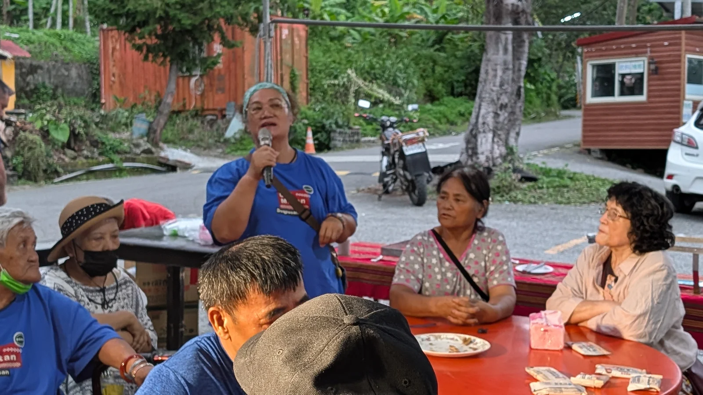

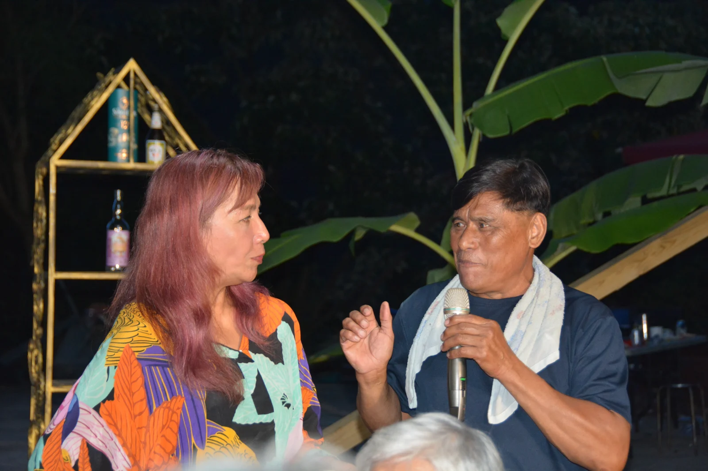
聽長輩說，當時家族的人口越來越多，後來分成了三家。其中有一家到了花蓮馬遠，媽媽這一家則走到了花蓮崙山。原來現在住在不同地方的家人，是這樣一路分開來生活的。
馬遠的家人還說，當時族人是看著太陽走過去的。看著太陽走，原來說的就是往東邊走 XDDD。這個說法我一直記得。
想到外公的爸媽當年是從這裡一路走去崙山，再看看現在坐在一起的大家，真的會覺得很不可思議。隔了這麼久，媽媽和舅舅們找到馬遠的家人，我們又因此來到雙龍，還能聚在一起聽這些事。
接著一起去拿菜，回到桌邊吃飯、聊天。這裡一定要說一下，我們在雙龍吃的東西，都是雙龍家人自己煮的喔！這麼多人要吃，還有會場的布置，他們為了我們這次過來，真的很用心準備。

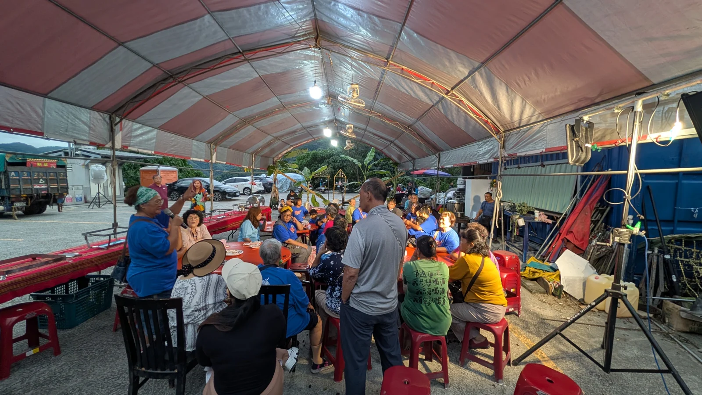

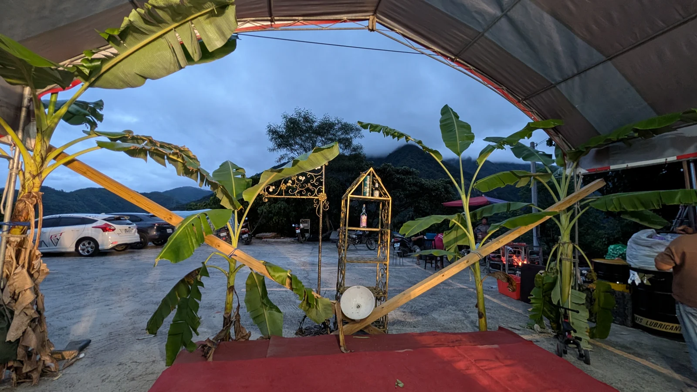

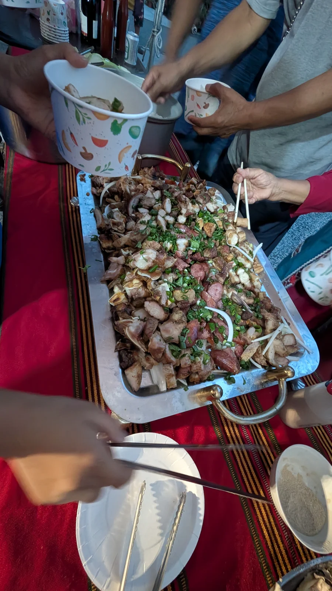
看著長輩、小朋友坐滿一桌又一桌，吃著家人準備的菜，就覺得這次能來真好。謝謝雙龍的家人，讓我們有這麼熱鬧的一次相聚 ^^。
從傍晚待到天黑，吃完飯也還沒結束。麥克風繼續拿著，晚上還有下一場 XDDD。

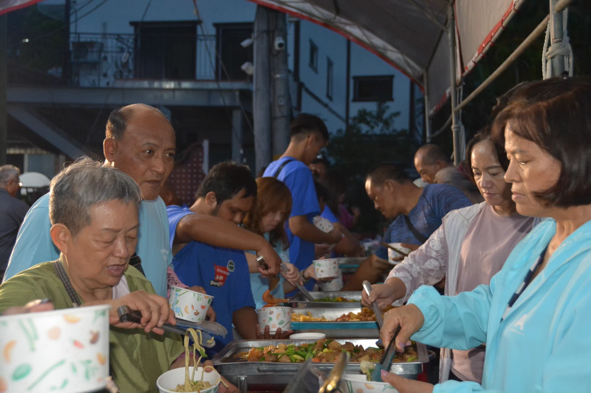

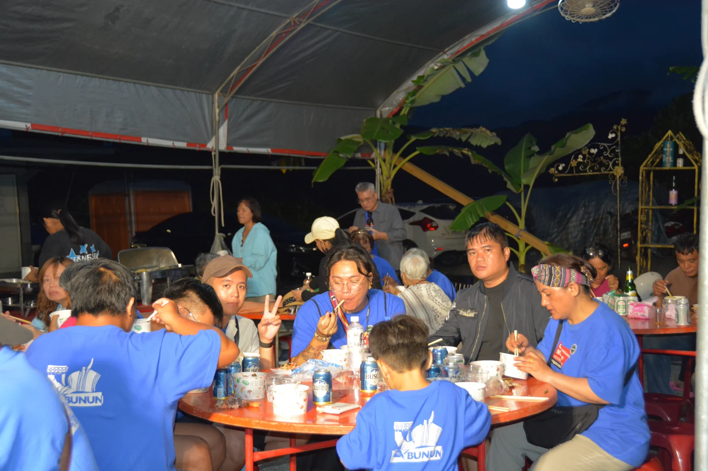
05 / 晚上繼續
吃完飯，換大家唱歌 XDDD
晚上換唱歌了 XDDD。有一個人唱的，也有兩個人一起唱的，小朋友也跟著站到前面去。

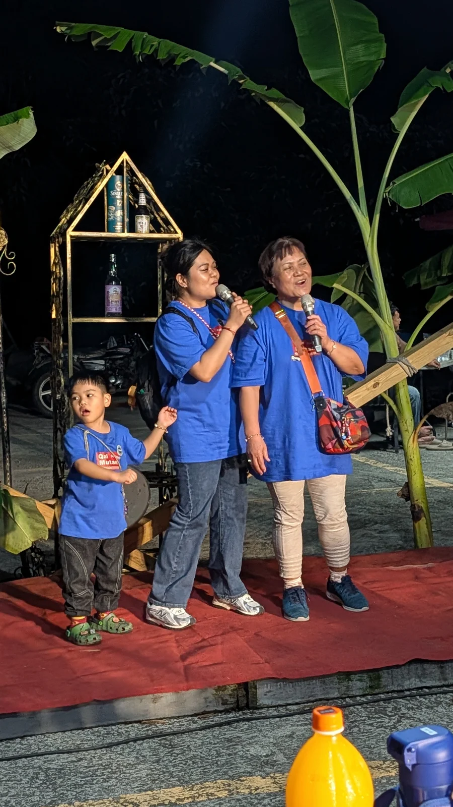

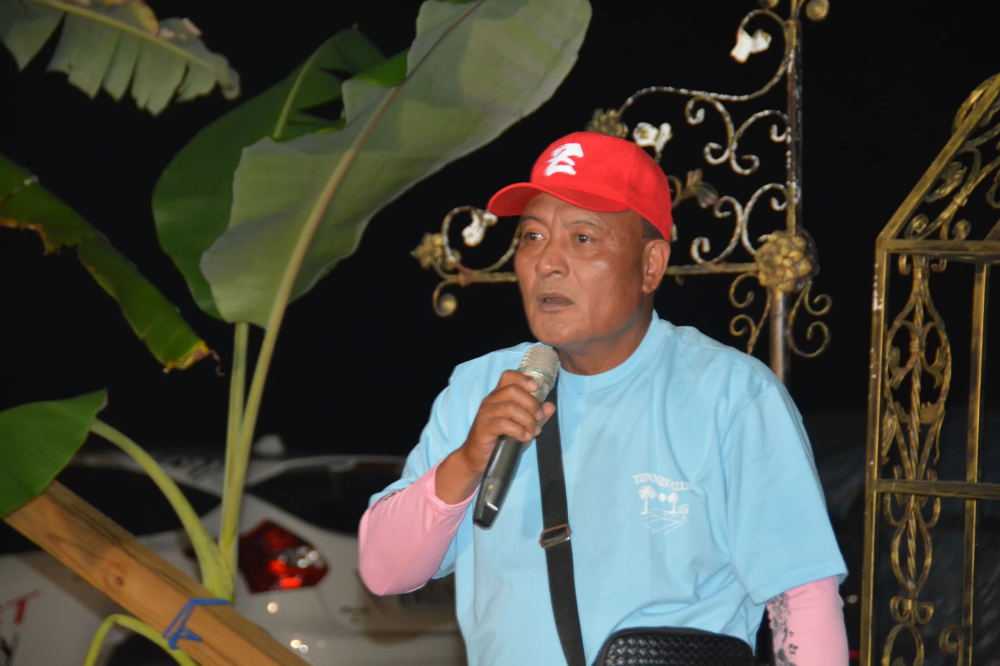
前面在唱，坐在桌邊的人就跟著拍手、舉手，還有人牽起手來。一邊有人唱，一邊有人回應，整個棚子下面都很熱鬧。

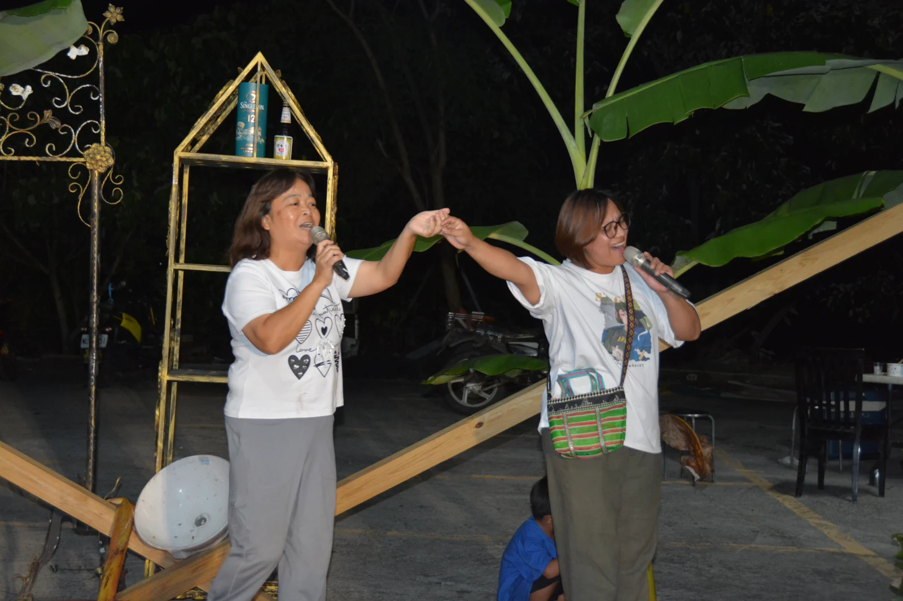

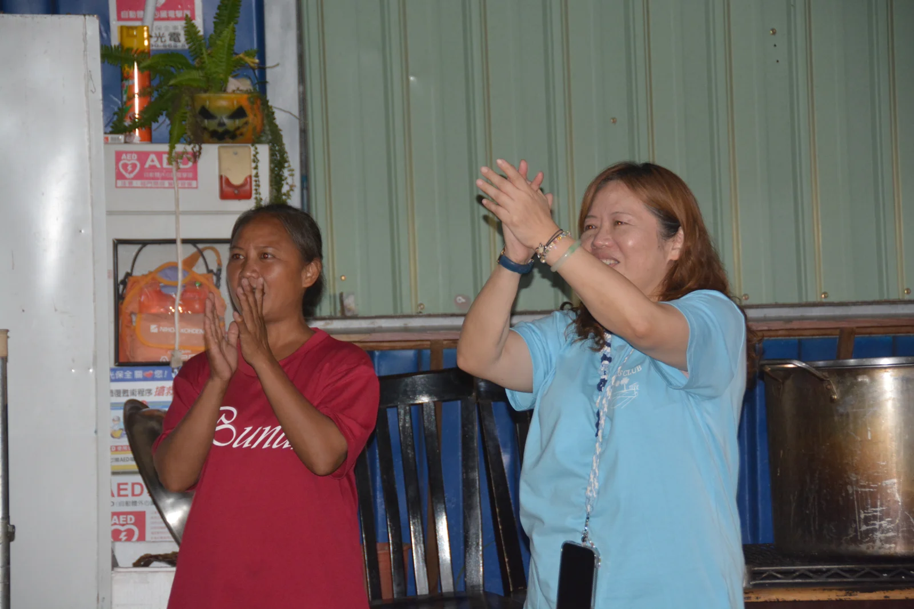
大家真的很有參與感欸 XD。剛剛還坐著吃飯聊天，現在又一起唱歌、一起拍手，連坐在旁邊都跟著熱鬧起來。能和家人一起過這樣一個晚上，真的很開心。

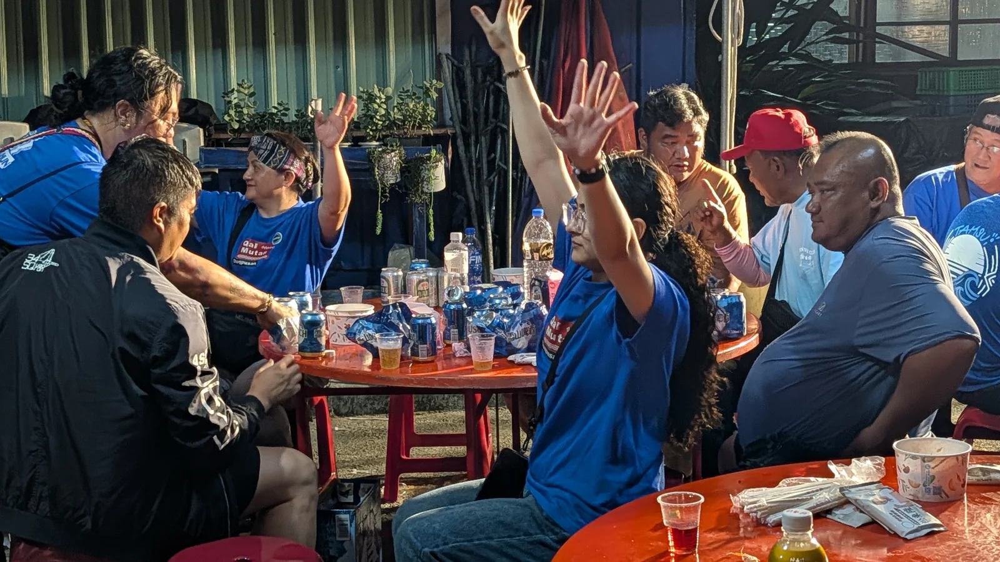

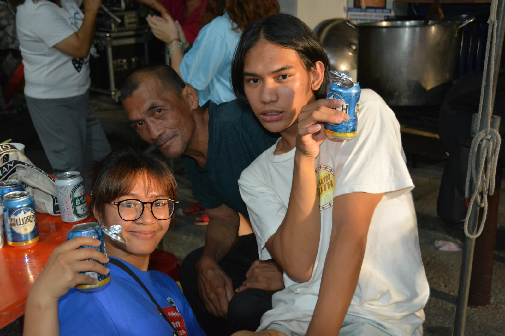
06 / 還好有回來
還好，這次有一起回來
原本只是想趁九族的活動，帶著家人出去玩。後來得知雙龍有家人，才有了今天這一段。現在想想，還好這次有一起來。
聽長輩講家族的事，也和大家一起吃飯、唱歌，雙龍對我來說就多了好多記憶。媽媽和舅舅們這幾年慢慢找到的家人，這次真的坐在一起了。
這些事很想好好記下來。以後再說起這趟旅行，除了去九族玩，也會記得我們一起回過雙龍，和那裡的家人度過了這麼熱鬧的一天 ^^。